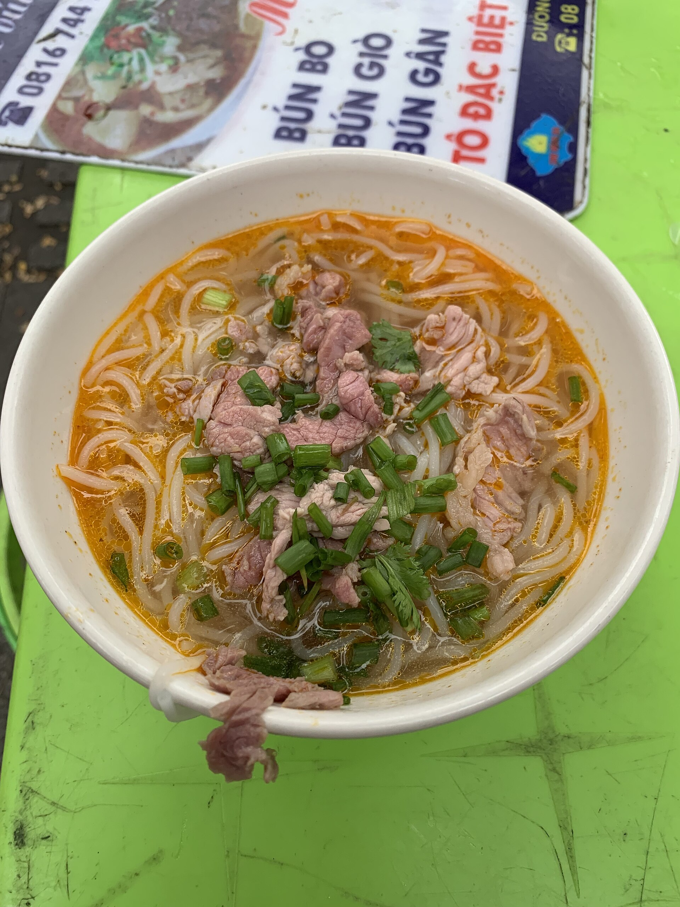

BẾP DỌC MIỀN / Ẩm thực
Mỗi miền, một vị nhớ.
Khám phá món ăn Việt qua nguyên liệu, câu chuyện và cách thưởng thức.
Mở sổ tayTrong sổ tay
Xem tất cả
Bản đồ món Việt
Đi qua những miền vị.
Từ nước dùng thanh của phở đến vị cay thơm của bún bò, mỗi món ăn gắn với một cách sống và một vùng nguyên liệu.
Tìm hiểu thêm